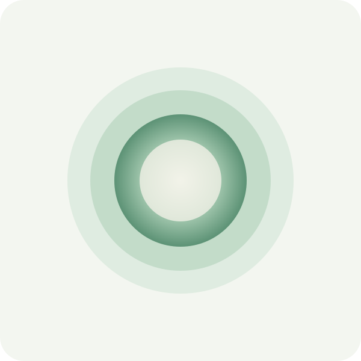

A GENTLE PRACTICE, IF IT HELPS
Come back to
this moment.
No special breathing is required. Pause, follow a gentle cue, or return to your natural breath whenever you want.
Optional meditation · silence always available

Hereat your pace